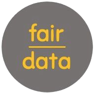
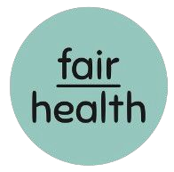
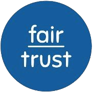
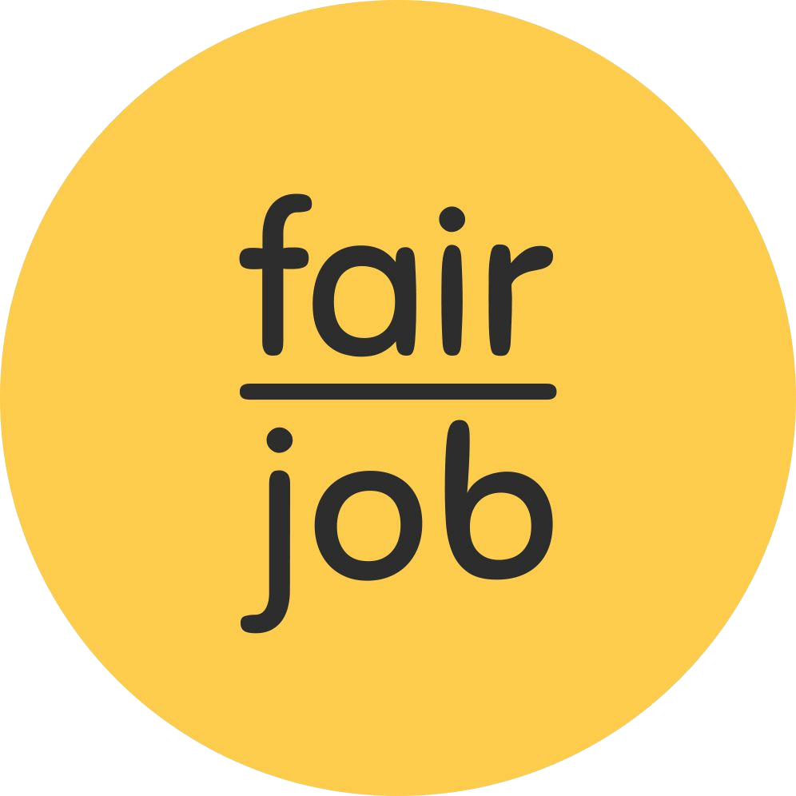

Medir.
Cuidar.
Comprovar.Um único ecossistema.
O ciclo completo da governança social.

@fairjob.brPesquisas contínuas e inteligência de dados que mostram onde está o risco e, principalmente, por quê. Saber o que fazer, por área e por liderança.
Pesquisa → Relatório → Plano de ação
Com o plano na mão, é hora de cuidar das pessoas. →
Médicos, psicólogos e assistentes sociais dentro da empresa. O colaborador é cuidado antes que o risco vire afastamento.
Mas o cuidado só se sustenta quando a liderança entende. →
Cursos, palestras e workshops sobre saúde mental, neurociência e segurança psicológica. Do conhecimento ao comportamento no dia a dia.
Falta mostrar que tudo isso é real. →
Auditoria e acreditação em parceria com a World Happiness Academy: evidência de que o compromisso com as pessoas é real.
E a prova gera novos dados. O ciclo recomeça. ↺
Nos próximos posts, como cada marca nasceu dentro da FairJob. Siga @fairjob.br